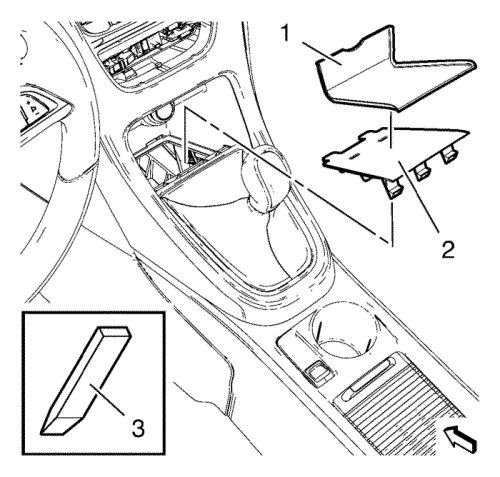
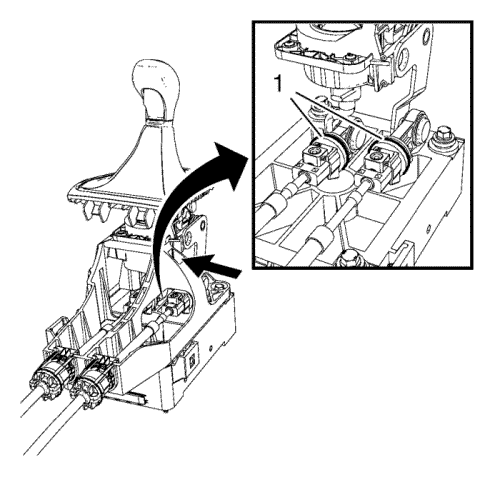
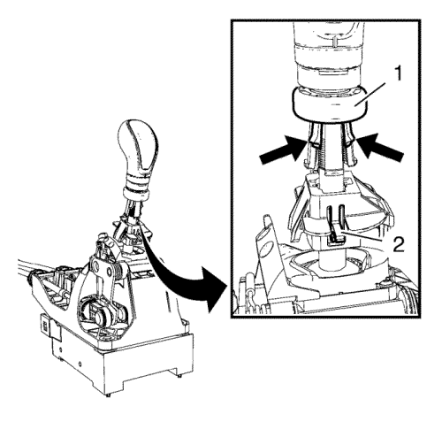
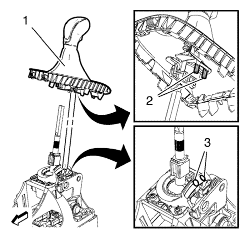
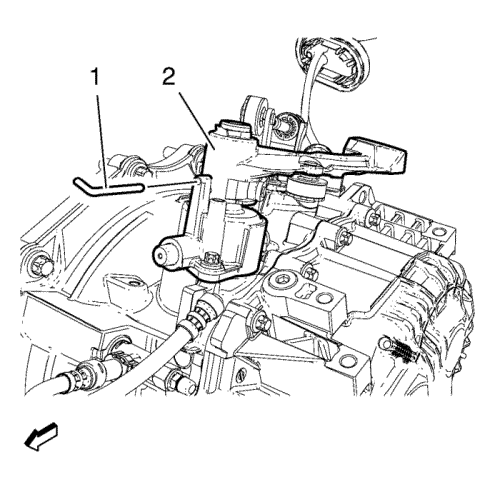
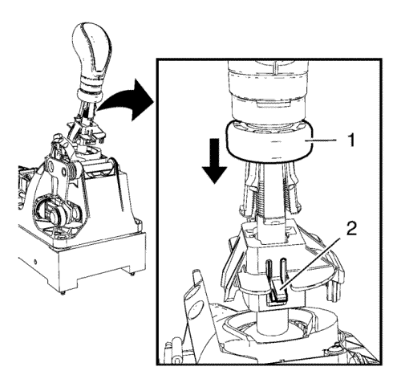
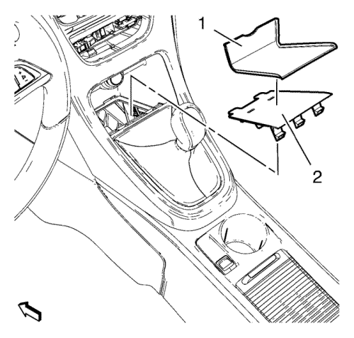

Ajuste de cables de la palanca selectora y de la palanca del cambio manual
Herramientas especiales
DT-527-A Herramienta de ajuste
Si desea informarse sobre herramientas regionales equivalentes, consultar Herramientas especiales .
Procedimiento de desmontaje

- Retire la alfombrilla (1).
- Suelte el forro del compartimento central inferior del panel de instrumentos (2) de la consola delantera del piso utilizando una herramienta de plástico adecuada (3).

- Desbloquee los bloqueos de la palanca del cambio y del cable de la palanca selectora (1) empujando hacia atrás el anillo deslizante negro comprimido por el muelle hasta que se autobloquee.
- Desbloquee el cable izquierdo a través de la abertura en la carcasa (flecha) utilizando una herramienta adecuada.

- Deslice hacia arriba la funda de la palanca del cambio.
- Presione los 2 bloqueos (flechas).
- Deslice hacia arriba el anillo azul de seguridad (1) de la palanca del cambio.
- Tire del gatillo (2) hacia arriba.
- Extraiga el pomo de la palanca de cambios.

- Gire el pomo de la palanca de cambios (1) 180° y monte la palanca de cambios.
- Empuje los 2 pernos (2) dentro de los 2 orificios (3).
- Desmonte el módulo de control del motor de la bandeja de la batería y colóquelo a un lado.

- Bloquee la carcasa del control del cambio (2) mediante el aparato de ajuste DT-527-A (1).
Procedimiento de montaje
- Bloquee las sujeciones de ajuste de los cables de la palanca de cambio y de la palanca selectora.
Nota: Cuando se traban los bloqueos de la herramienta de ajuste (1) se debe escuchar un chasquido audible y/o debe ser sentido.
- Bloquee las sujeciones de ajuste de los cables de la palanca de cambio y de la palanca selectora.
- Bloquee las trabas de la palanca de cambio y del cable de la palanca selectora (1) empujando hacia abajo las dos piezas azules de bloqueo, SIN tocar/aplicar presión a la palanca de cambio fija.

- Monte el pomo de la palanca del cambio.
Gire el pomo de la palanca del cambio 180° hacia atrás.
- Durante el montaje, oprima el pomo de la palanca del cambio a fondo hacia abajo. Empuje el gatillo (2) hacia arriba.
- Deslice hacia abajo el anillo azul de seguridad (1) de la palanca del cambio.
- Retire la herramienta de ajuste DT-527-A de la carcasa del control del cambio.
- Compruebe que el cambio funciona correctamente.
- De ser necesario, repita el procedimiento de ajuste.

- Fije el forro del compartimento central inferior del panel de instrumentos (2) en la consola delantera del piso.
- Coloque la alfombrilla (1).
| © Copyright Chevrolet. Reservados todos los derechos |